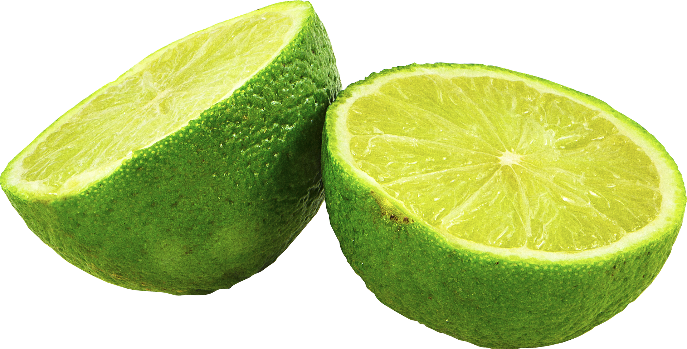

BTM
Chaussures
Mobilier
Fruits
Fruits > Agrumes

Citron vert
Calibre 4/5
La lime, lime acide ou citron vert est un agrume. C'est le fruit du limettier, arbuste de la famille des Rutacées, dont il existe deux espèces:
Citrus latifolia et Citrus aurantiifolia.
Caractéristiques:
vert,
piquant,
plein de vitamines.
Plus de détails